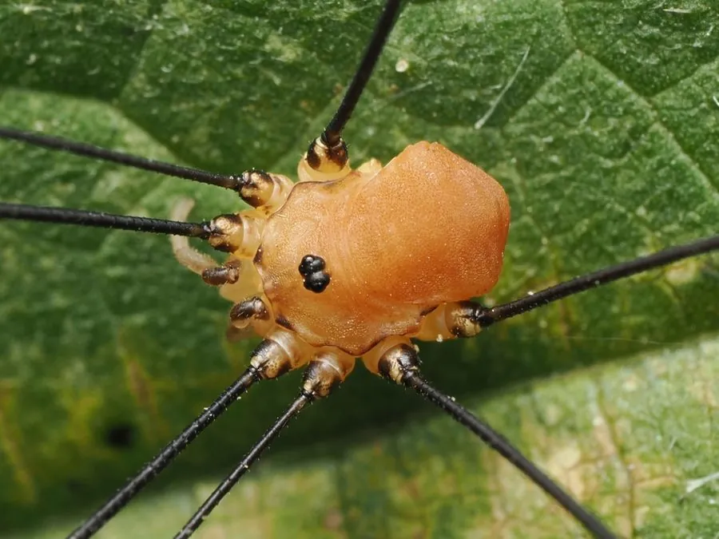

蛛形动物 · 动物界
欧洲盲蛛 Leiobunum rotundum

欧洲常见的长腿盲蛛，腿极细长、身体呈小圆球状，不结网也没有毒腺，在灌丛和墙面上游走捕食小型无脊椎动物。
- 分类
- 门节肢动物门纲蛛形纲目盲蛛目科长踦盲蛛科属长踦盲蛛属
- 栖息环境
- 森林、灌丛、花园、农田与建筑物的阴暗潮湿处
- 地理分布
- 欧洲大部分地区，包括英国、法国、德国等
- 保护级别
- IUCN 暂无评估；非中国原产，在中国无保护级别
物种志
欧洲盲蛛体长仅 5–8 毫米，腿却可长达 5 厘米以上，第二对足最长，是身体的数倍。它身体呈椭圆形或小圆球状，背甲与腹部之间没有明显的缢缩，只有一对眼睛长在头胸甲中央的突起上；步足细长灵活，末端有爪，但没有蜘蛛那样的丝腺和毒腺。
它分布于欧洲的森林、灌丛、花园和农田，夜间活动，白天藏在叶背、树皮或墙角，捕食蚜虫、螨虫、小型昆虫和蜘蛛，也取食腐烂的植物和动物尸体。秋季雌蛛把卵产在土壤和落叶层中，卵在冬季越冬，幼蛛来年孵化，成体一般在当年秋季死亡。欧洲盲蛛不结网、无毒腺，不会伤人；受惊时它会快速摆动身体逃走，有时会自断步足求生。
形态与习性
- 食性蚜虫、螨虫、小型昆虫、蜘蛛及腐殖质
- 体长5–8 mm，腿展可达 5 cm 以上
- 寿命约 1 年
- 繁殖卵生，秋季产卵于土壤落叶层，卵越冬
- 活动节律夜行性，白天藏在叶背和墙角
- 防御无毒腺、不结网，受惊时快速逃走
趣味知识
- 欧洲盲蛛腿极长、身体很小，外形像蜘蛛，但它属于盲蛛目，没有毒腺和丝腺。
- 它的第二对足最长，常像触角一样向前探路。
- 盲蛛受惊时可能自断一条腿逃生，断腿还能抽动吸引天敌注意。